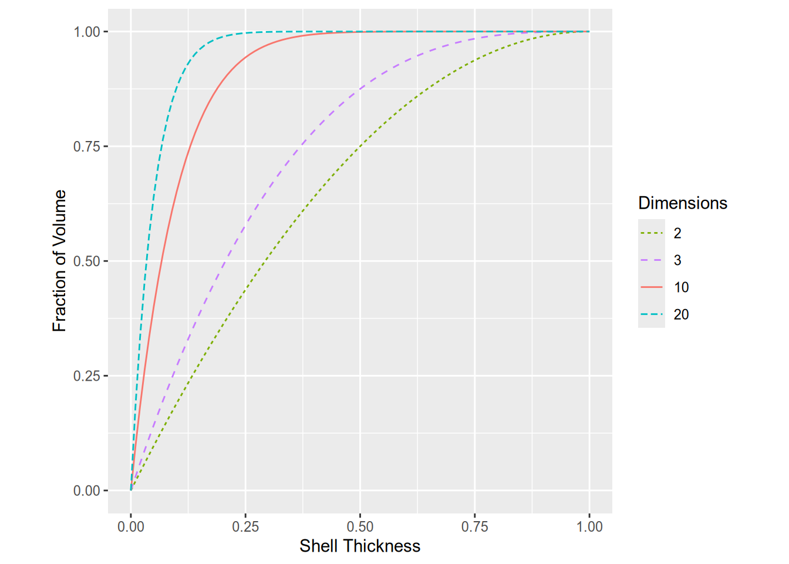

library("palmerpenguins")
peng = na.omit(penguins)
# Columns to transform with PCA.
cols = c("bill_length_mm", "bill_depth_mm", "flipper_length_mm", "body_mass_g")
x = peng[cols]2 Unsupervised Learning
2.1 Introduction
Unsupervised learning methods identify or summarize groups or patterns within data. Unlike supervised learning, unsupervised learning methods do not require a training set and do not make predictions.
Three common problems in unsupervised learning are:
- Dimension reduction, where the goal is to reduce the dimensionality (number of features) of a data set while preserving some of the characteristics that distinguish the observations. Some dimension reduction methods rank or select features, while others create an embedding, a set of new features computed from the originals.
- Clustering, where the goal is to identify clusters, or groups of similar observations in a data set.
- Anomaly detection, where the goal is to identify unusual or extreme observations in a data set.
Tip
It might help to think of dimension reduction and clustering as unsupervised equivalents of regression and classification (Section 1.1), respectively. Dimension reduction creates a numerical summary (an embedding) of each observation, while clustering creates a categorical summary (a cluster label).
You can also think of dimension reduction and clustering methods as lossy data compression methods.
The next section describes packages for unsupervised learning in R. The subsequent sections provide more details about and examples of methods for dimension reduction and clustering. The chapter ends with a discussion of ways to evaluate clusters.
2.2 Packages
2.2.1 Dimension Reduction
There’s no CRAN Task View page for dimension reduction. Some dimension reduction packages are:
- Independent Component Analysis (ICA)
- Principal Component Analysis (PCA)
- Classical/Metric Multidimensional Scaling (MDS)
- Built-in
cmdscalefunction - smacof
- Built-in
- Nonnegative Matrix Factorization (NMF)
- t-Distributed Stochastic neighbor Embedding (t-SNE)
- Uniform Manifold Approximation and Projection (UMAP)
The following packages provide a wider collection of dimension reduction methods:
- dimRed is a common interface for a variety of dimension reduction methods packages (the accompanying paper provides an very brief overview of many dimension reduction methods).
- recipes is a tidymodels package for preprocessing and feature engineering that provides a common interface for many dimension reduction methods packages.
- vegan is collection of statistical methods popular among community and vegetation ecologists, including some dimension reduction methods.
2.2.2 Clustering
The CRAN Task View: Cluster Analysis page is a list of popular, actively-maintained packages for clustering. The list receives regular updates from the CRAN administrators.
The tidyclust package provides a common interface for a variety of clustering method packages.
2.3 Dimension Reduction
Reasons you might want to use dimension reduction methods on a data set include:
- Many machine learning methods perform poorly when dimensionality is high, especially if it’s high relative to the number of observations.
- Visualizing more than 2 or 3 features at a time is difficult.
- You suspect the data set has a few informative features hidden among many uninformative ones.
- Computing costs (time and money) tend to increase with data set size.
Important
High-dimensional data sets are a problem for many machine learning methods because:
- Sparsity increases with dimensionality, because volume increases with dimensionality. In other words, as the number of features in a data set increases, distances between the observations increase. This effect is known as the curse of dimensionality.
- The number of parameters to estimate typically increases with dimensionality. For instance, in a linear model, there’s a coefficient for each included feature.
A few methods, such as regularized linear models and random forest models, are robust by design when faced with high-dimensional data. These methods usually have some sort of built-in dimension reduction.
Section 2.3.2 provides more details about the curse of dimensionality.
Different dimension reduction methods preserve different characteristics of data and have different use cases: there’s no one-size-fits-all method. When selecting a method, think about what your goals and priorities are. Do you want to plot the data? Do you want to use the data for supervised learning? Do the data need to fit in a fixed amount of memory? Are the features numerical, categorical, or a mix of both? Thinking through these details will help guide you to an appropriate method. Nguyen and Holmes (2019) provide a concise overview of things to consider when using dimension reduction methods.
Note
If you plan to use your data set for supervised learning, it’s usually best to choose a supervised learning model with some kind of dimension reduction built-in. These models optimize for predicting the response, whereas unsupervised dimension reduction methods do not. Some examples include:
- Regularized regression (LASSO, Elastic Net, …)
- Partial least squares regression
- Supervised principal components analysis
- Random forest models
Dimension reduction methods always change some of the relationships between observations. Typically, there’s a tradeoff between preserving global structure, the relationships between all observations, and local structure, the relationships between nearby observations. See this StackOverflow post for an example and visualization of this tradeoff.
Here‚Äôs a list of a few well-known dimension reduction methods, where üåê denotes methods that tend to preserve global structure while üèòÔ∏è denotes methods that tend to preserve local structure:
- üåê Principal Component Analysis (PCA)
- Identifies perpendicular axes of greatest variance (the “principal components”) and rotates feature space to these axes
- Difficult to interpret in most cases
- Creates linear combinations of the original features; kernel PCA (kPCA) generalizes to non-linear combinations
- üåê Nonnegative Matrix Factorization (NMF)
- Like PCA, but limited to nonnegative data and produces nonnegative components
- Easy to interpret in some cases
- üèòÔ∏è Isomap
- Assumes observations are on a low-dimensional manifold and preserves distances on the manifold (geodesic distances)
- üèòÔ∏è t-Distributed Stochastic Neighbor Embedding (t-SNE) (guide)
- Non-deterministic method to preserve local structure
- Mainly used for visualizations
- üèòÔ∏è Uniform Manifold Approximation and Projection (UMAP)
- Like t-SNE
- Mainly used for visualizations, although the creators claim it is broadly applicable
Important
Most dimension reduction methods are sensitive to the scales of features, and some also require that features have mean 0. It’s usually a good idea to standardize each feature before dimension reduction, by subtracting the mean and dividing by the standard deviation. In R, you can use the scale function to do this.
2.3.1 Example: Penguins PCA
Let’s try out principal components analysis on the Palmer Penguins data set from Section 1.2.1. Start by loading the data, removing the observations with missing values, and selecting the numerical features:
Let’s run PCA with R’s built-in prcomp function first. The function has parameters center and scale. to control whether the features are centered and scaled first. PCA is intended for centered data, so you should always center the data (and this is the default). Whether you should scale the data depends on how different the scales of your features are, but it’s usually a good idea if you’re not sure. Scaling features makes them harder to interpret, but PCA is generally hard to interpret anyways. Run PCA:
pca = prcomp(x, center = TRUE, scale. = TRUE)
pcaStandard deviations (1, .., p=4):
[1] 1.6569115 0.8821095 0.6071594 0.3284579
Rotation (n x k) = (4 x 4):
PC1 PC2 PC3 PC4
bill_length_mm 0.4537532 -0.60019490 -0.6424951 0.1451695
bill_depth_mm -0.3990472 -0.79616951 0.4258004 -0.1599044
flipper_length_mm 0.5768250 -0.00578817 0.2360952 -0.7819837
body_mass_g 0.5496747 -0.07646366 0.5917374 0.5846861You can think of the standard deviations as a measure of information in along each principal component. The principal components are always sorted from highest to lowest standard deviation.
Each principal component is a linear combination of the features. The columns of the rotation matrix show the coefficients for the features in these linear combinations.
You can use the predict function to compute the PCA embeddings for a data set. By default, prcomp computes these automatically for the original data set, so in this case you can get the embeddings with either pca$retx or predict. Let’s get the embeddings with predict and plot the first two principal components:
# Rotate the features to the principal components.
embeddings = predict(pca, x)
embeddings = data.frame(species = peng$species, embeddings)
library("ggplot2")
ggplot(embeddings) +
aes(x = PC1, y = PC2, color = species, shape = species) +
geom_point()
The plot shows that the principal components separate the Gentoo penguins, but there’s still some overlap between the other species. PCA is not designed to separate classes (and is not even aware of the classes), so this result isn’t surprising. Instead, PCA tries to represent variation in the data set efficiently. For instance, the first and second principal components often capture a substantial percentage of the overall variation.
It’s common to make another plot, called a scree plot, to visualize how well principal components account for variation. Specifically, a scree plot shows the percentage of total variance accounted for by each principal component. The prcomp function returns standard deviations principal components, which you can square to compute variances. The code to make a scree plot is:
scree = data.frame(pc = seq_along(pca$sdev), var = pca$sdev^2)
# Compute percentage of variance explained.
scree$pct_var = scree$var / sum(scree$var)
ggplot(scree) +
aes(x = pc, y = pct_var) +
labs(x = "Principal Component", y = "Percentage of Variance Explained") +
geom_point() +
geom_line()The scree plot shows that the first and second prinicpal component account for almost 90% (70% + 20%) of the variance in the four features. When you use PCA for dimension reduction, you can use a scree plot to decide how many principal components to keep. A common approach is to look for an “elbow” in the plot where keeping additional components provides a relatively small increase in percentage of variance accounted for.
Now let’s run PCA with the recipes package. The package is designed around the idea of writing “recipes” for data analysis, which can include preprocessing, feature engineering, modeling, and more. Recipes always begin with a call to the recipe function, which takes a training data set as an argument. Then you can add (via the pipe operator %>%) any number of step_ functions, which correspond to individual steps in the analysis. For PCA, you can use step_normalize (to center and scale) and step_pca. Next, the prep function runs the recipe. Finally, the juice and bake functions extract the result of a recipe on the training set or a new data set, respectively. Putting all of these ideas together, the code is:
# install.packages("recipes")
library("recipes")
embeddings_tidy =
recipe(peng) %>%
step_normalize(all_of(cols)) %>%
step_pca(all_of(cols)) %>%
prep() %>%
juice()
ggplot(embeddings_tidy) +
aes(x = PC1, y = PC2, color = species, shape = species) +
geom_point()The plot shows the same result as before. As of writing, the recipes package doesn’t appear to provide a convenient way to get diagnostic information about PCA or make a scree plot.
2.3.2 Example: Visualizing the Curse of Dimensionality
Another way to think about the curse of dimensionality is in terms of where most of the volume is in a \(d\)-dimensional ball. As \(d\) increases, the fraction of volume near the surface of the ball increases. In this example, we’ll visualize the relationship between dimensionality \(d\) and the fraction of volume near the surface of a ball.
In general, the volume of a \(d\)-dimensional ball with radius \(r\) is:
\[ V_d(r) = C_d \cdot r^d \]
Where \(C_d\) is a constant that depends on the dimensionality. For example, the volumes of a circle and a sphere are respectively:
\[ \begin{aligned} V_2(r) &= \pi \cdot r^2 \\ V_3(r) &= \frac{4}{3} \pi \cdot r^3 \end{aligned} \]
For a ball with radius \(r = 1\), the volume is just \(V_d(1) = C_d\). Now consider a ball with radius \(r = 1 - \epsilon\). The volume is:
\[ V_d(1 - \epsilon) = C_d \cdot (1 - \epsilon)^d \]
Subtracting a \((1 - \epsilon)\)-ball from a 1-ball gives a shell at the surface of the 1-ball with thickness \(\epsilon\). You can also find the volume of this \(\epsilon\)-shell by subtracting the respective volumes. So the fraction of the 1-ball’s volume made up of the \(\epsilon\)-shell is:
\[ \frac{V_d(1) - V_d(1 - \epsilon)}{V_d(1)} = \frac{C_d - C_d \cdot (1 - \epsilon)^d}{C_d} = 1 - (1 - \epsilon)^d \]
You can use R to plot this quantity for different values of \(\epsilon\) and \(d\):
library("ggplot2")
ggplot() +
# Set aspect ratio to 1.
coord_fixed() +
xlim(0, 1) +
labs(x = "Shell Thickness", y = "Fraction of Volume") +
scale_color_discrete("Dimensions", breaks = c("2", "3", "10", "20")) +
scale_linetype_discrete("Dimensions", breaks = c("2", "3", "10", "20")) +
# Functions to plot.
geom_function(
fun = \(x) 1 - (1 - x)^2, aes(color = "2", linetype = "2")) +
geom_function(
fun = \(x) 1 - (1 - x)^3, aes(color = "3", linetype = "3")) +
geom_function(
fun = \(x) 1 - (1 - x)^10, aes(color = "10", linetype = "10")) +
geom_function(
fun = \(x) 1 - (1 - x)^20, aes(color = "20", linetype = "20"))
The plot shows that as \(d\) increases, the fraction of volume near the surface of the 1-ball increases. For instance, at \(d = 20\), almost 100% of the volume is within 0.25 of the ball’s surface.
This example is based on one in Section 1.4 of Pattern Recognition and Machine Learning.
Tip
Section 2.5 of The Elements of Statistical Learning provides a different perspective on the curse of dimensionality.
To learn even more about the counterintuitive properties of high-dimensional spaces, watch Thinking Outside the 10-Dimensional Box by 3Blue1Brown.
2.4 Clustering
Clustering methods identify groups or clusters of similar observations within a data set. From an exploratory data analysis perspective, clusters provide insight into subpopulations, which might merit individual investigation or followup confirmatory work. Some clustering methods can also detect noise or outlying observations. From a classification perspective, clusters can sometimes be used as approximate classes, to speed up the process of creating an annotated training set.
As with dimension reduction methods, different clustering methods emphasize different characteristics of data. In particular, they measure similarity between observations in different ways. Here’s a list of some well-known families of clustering methods, where ✨ indicates a good starting point for many problems:
- ✨ Density-based clustering
- These methods estimate density of observations and treat contiguous high-density regions as clusters.
- Takeaways: Easy to explain the intuition, but many technical details. No assumptions about cluster size or shape. Can identify noise observations. Computational cost scales well.
- Methods:
- ✨ Hierarchical clustering
- These methods form a hierarchy of clusters by repeatedly combining or splitting initial clusters. Clusters are selected to combine or split based on how they affect dissimilarity, which is measured with a linkage function. A variety of linkage functions can be used, and the choice of linkage function has a substantial impact on the resulting clusters (see this page).
- Takeaways: The hierachy of clusters can be visualized with a dendogram, and can be “cut” at various levels to produce coarser or finer clusters. Different linkage functions provide specific effects. Doesn’t identify noise observations. Computational cost scales well.
- Methods:
- Agglomerative clustering (guide)
- Divisive clustering
- Model-based clustering
- These methods assume observations are generated from a specific probability distribution, estimate the parameters of the distribution, and predict the most likely cluster labels.
- Takeaways: A good choice if you have knowledge about the probability distribution of your data. Gaussian models, which are the most common, find ellipsoid clusters. The number of clusters needs to be specified in advance. Can be used for fuzzy clustering, since the result for each observation is a set of cluster probabilities rather than a label.
- Methods:
- Mixture models, which can be fitted with the expectation-maximization algorithm or Bayesian methods
- Partitioning clustering
- These methods partition a data set into evenly-sized clusters based on distances between observations and cluster centroids.
- Takeaways: Easy to explain. Clusters are evenly-sized. The number of clusters needs to be specified in advance, although there are ways to estimate the number of clusters. Doesn’t identify noise observations. Computational cost scales well.
- Methods:
Important
Like dimension reduction methods, most clustering methods are sensitive to the scales of features. So you should generally standardize each feature before clustering.
2.4.1 Example: Importance of Standardizing
To demonstrate the importance of standardizing features before clustering, let’s run \(k\)-means clustering on the Palmer Penguins data set before and after standardizing. We’ll use the tidyclust package to do the clustering. The package is designed to have an interface similar to parsnip (see Section 1.2.1). Here’s the code to initialize \(k\)-means clustering and specify the features to consider:
# install.packages("tidyclust")
library("tidyclust")
km = k_means(num_clusters = 3)
form = ~ bill_length_mm + bill_depth_mm + flipper_length_mm + body_mass_gNow “fit” the \(k\)-means clusters. Since we know there are 3 penguin species, let’s request 3 clusters:
fitted = fit(km, form, peng)
fittedtidyclust cluster object
K-means clustering with 3 clusters of sizes 140, 113, 80
Cluster means:
bill_length_mm bill_depth_mm flipper_length_mm body_mass_g
1 41.12214 17.94643 189.6286 3461.250
3 44.24336 17.44779 201.5487 4310.619
2 48.66250 15.39750 219.9875 5365.938
Clustering vector:
1 2 3 4 5 6 7 8 9 10 11 12 13 14 15 16 17 18 19 20
1 1 1 1 1 1 2 1 1 2 1 1 2 1 2 1 1 1 2 1
21 22 23 24 25 26 27 28 29 30 31 32 33 34 35 36 37 38 39 40
1 1 1 1 2 1 2 1 2 1 2 2 1 1 2 1 2 1 2 1
41 42 43 44 45 46 47 48 49 50 51 52 53 54 55 56 57 58 59 60
2 1 1 2 1 2 1 2 1 1 1 1 1 1 1 2 1 2 1 2
61 62 63 64 65 66 67 68 69 70 71 72 73 74 75 76 77 78 79 80
1 2 1 2 1 2 1 2 1 2 1 2 1 2 1 2 1 2 1 1
81 82 83 84 85 86 87 88 89 90 91 92 93 94 95 96 97 98 99 100
1 1 2 1 1 2 1 2 1 2 1 2 1 2 1 2 1 2 1 1
101 102 103 104 105 106 107 108 109 110 111 112 113 114 115 116 117 118 119 120
1 2 1 2 1 2 1 2 2 2 1 1 1 1 1 1 1 1 1 2
121 122 123 124 125 126 127 128 129 130 131 132 133 134 135 136 137 138 139 140
1 2 1 2 1 1 1 2 1 2 1 2 1 2 1 1 1 1 1 1
141 142 143 144 145 146 147 148 149 150 151 152 153 154 155 156 157 158 159 160
2 1 1 1 1 2 2 3 2 3 3 2 2 3 2 3 2 3 2 3
161 162 163 164 165 166 167 168 169 170 171 172 173 174 175 176 177 178 179 180
2 3 2 3 2 3 3 3 2 3 3 3 3 2 3 3 2 3 3 3
181 182 183 184 185 186 187 188 189 190 191 192 193 194 195 196 197 198 199 200
3 3 3 2 3 2 3 2 2 3 3 2 3 3 3 3 3 2 3 3
201 202 203 204 205 206 207 208 209 210 211 212 213 214 215 216 217 218 219 220
3 2 3 2 3 2 3 2 3 2 3 3 2 3 2 3 3 3 2 3
221 222 223 224 225 226 227 228 229 230 231 232 233 234 235 236 237 238 239 240
2 3 2 3 2 3 2 3 2 3 2 3 3 3 3 3 2 3 3 3
241 242 243 244 245 246 247 248 249 250 251 252 253 254 255 256 257 258 259 260
3 3 2 3 3 3 3 3 3 2 3 2 3 3 3 2 3 2 3 3
261 262 263 264 265 266 267 268 269 270 271 272 273 274 275 276 277 278 279 280
3 3 3 3 3 1 2 1 1 1 2 1 1 2 1 1 1 1 2 1
281 282 283 284 285 286 287 288 289 290 291 292 293 294 295 296 297 298 299 300
2 1 1 1 2 1 1 1 1 1 2 1 1 1 2 1 2 1 2 1
301 302 303 304 305 306 307 308 309 310 311 312 313 314 315 316 317 318 319 320
2 1 2 1 2 2 1 1 1 1 2 1 2 1 1 1 2 1 2 1
321 322 323 324 325 326 327 328 329 330 331 332 333
1 1 2 1 1 2 1 1 2 1 1 2 1
Within cluster sum of squares by cluster:
[1] 9724809 9318036 9718829
(between_SS / total_SS = 86.6 %)
Available components:
[1] "cluster" "centers" "totss" "withinss" "tot.withinss"
[6] "betweenss" "size" "iter" "ifault" Printing the fitted object shows the cluster means as well as the ratio of the between-cluster sum of squared errors (BSS) to total sum of squared errors (TSS). The ratio provides one indication of how well the clusters fit the data; larger values are better.
Let’s make a plot of the clusters against bill_length_mm and body_mass_g. You can get the cluster labels for the observations with the extract_cluster_assignment function. The result is a data frame with the cluster labels in the .cluster column. Here’s the code to make the plot:
clust = extract_cluster_assignment(fitted)$.cluster
ggplot(peng) +
aes(x = bill_length_mm, y = body_mass_g, shape = clust, color = clust) +
geom_point() +
facet_wrap(vars(species))The identified clusters don’t match up well with the penguin species. While this could just mean that the features don’t differentiate the species, in this case something else is at play. Notice that along the y-axis, the clusters fall into three distinct bands. This is a sign that body_mass_g, the feature on the y-axis, dominates the distances used to compute the clusters. In other words, these features have wildly different scales. You can see this by computing the standard deviations of the features:
summarize(peng, across(bill_length_mm:body_mass_g, sd))# A tibble: 1 × 4
bill_length_mm bill_depth_mm flipper_length_mm body_mass_g
<dbl> <dbl> <dbl> <dbl>
1 5.47 1.97 14.0 805.The values of body_mass_g are much more spread out than the values of the other features.
peng_scaled =
mutate(peng,
across(bill_length_mm:body_mass_g, \(x) scale(x)[, 1])
)
fitted = fit(km, form, peng_scaled)
fittedtidyclust cluster object
K-means clustering with 3 clusters of sizes 129, 85, 119
Cluster means:
bill_length_mm bill_depth_mm flipper_length_mm body_mass_g
3 -1.0452359 0.4858944 -0.8803701 -0.7616078
2 0.6710153 0.8040534 -0.2889118 -0.3835267
1 0.6537742 -1.1010497 1.1607163 1.0995561
Clustering vector:
1 2 3 4 5 6 7 8 9 10 11 12 13 14 15 16 17 18 19 20
1 1 1 1 1 1 1 1 1 1 1 1 2 1 2 1 1 1 1 1
21 22 23 24 25 26 27 28 29 30 31 32 33 34 35 36 37 38 39 40
1 1 1 1 1 1 1 1 1 1 1 1 1 1 1 1 1 1 2 1
41 42 43 44 45 46 47 48 49 50 51 52 53 54 55 56 57 58 59 60
1 1 1 2 1 1 1 2 1 1 1 1 1 1 1 2 1 1 1 1
61 62 63 64 65 66 67 68 69 70 71 72 73 74 75 76 77 78 79 80
1 1 1 2 1 1 1 2 1 2 1 1 1 2 1 2 1 1 1 1
81 82 83 84 85 86 87 88 89 90 91 92 93 94 95 96 97 98 99 100
1 1 1 1 1 2 1 1 1 2 1 1 1 2 1 2 1 1 1 1
101 102 103 104 105 106 107 108 109 110 111 112 113 114 115 116 117 118 119 120
1 1 1 2 1 2 1 2 1 2 1 1 1 1 1 1 1 1 1 1
121 122 123 124 125 126 127 128 129 130 131 132 133 134 135 136 137 138 139 140
1 1 1 2 1 2 1 1 1 1 1 1 1 1 1 1 1 1 1 1
141 142 143 144 145 146 147 148 149 150 151 152 153 154 155 156 157 158 159 160
1 1 1 1 1 2 3 3 3 3 3 3 3 3 3 3 3 3 3 3
161 162 163 164 165 166 167 168 169 170 171 172 173 174 175 176 177 178 179 180
3 3 3 3 3 3 3 3 3 3 3 3 3 3 3 3 3 3 3 3
181 182 183 184 185 186 187 188 189 190 191 192 193 194 195 196 197 198 199 200
3 3 3 3 3 3 3 3 3 3 3 3 3 3 3 3 3 3 3 3
201 202 203 204 205 206 207 208 209 210 211 212 213 214 215 216 217 218 219 220
3 3 3 3 3 3 3 3 3 3 3 3 3 3 3 3 3 3 3 3
221 222 223 224 225 226 227 228 229 230 231 232 233 234 235 236 237 238 239 240
3 3 3 3 3 3 3 3 3 3 3 3 3 3 3 3 3 3 3 3
241 242 243 244 245 246 247 248 249 250 251 252 253 254 255 256 257 258 259 260
3 3 3 3 3 3 3 3 3 3 3 3 3 3 3 3 3 3 3 3
261 262 263 264 265 266 267 268 269 270 271 272 273 274 275 276 277 278 279 280
3 3 3 3 3 2 2 2 2 2 2 2 2 2 2 2 2 2 2 2
281 282 283 284 285 286 287 288 289 290 291 292 293 294 295 296 297 298 299 300
2 2 2 2 2 1 2 1 2 2 2 2 2 2 2 1 2 1 2 2
301 302 303 304 305 306 307 308 309 310 311 312 313 314 315 316 317 318 319 320
2 2 2 2 2 2 2 2 2 2 2 2 2 2 2 2 2 2 2 1
321 322 323 324 325 326 327 328 329 330 331 332 333
2 2 2 2 2 2 2 2 2 2 2 2 2
Within cluster sum of squares by cluster:
[1] 120.7030 109.4813 139.4684
(between_SS / total_SS = 72.2 %)
Available components:
[1] "cluster" "centers" "totss" "withinss" "tot.withinss"
[6] "betweenss" "size" "iter" "ifault" Notice that the BSS to TSS ratio decreased by about 14%.
Let’s plot the clusters the same way as before:
clust = extract_cluster_assignment(fitted)$.cluster
ggplot(peng) +
aes(x = bill_length_mm, y = body_mass_g, shape = clust, color = clust) +
geom_point() +
facet_wrap(vars(species))Now the clusters appear to correspond to the penguin species much better than before. Because all of the features have the same scale, they contribute equally to the distances \(k\)-means computes, and all of them help to identify the clusters.
Interestingly, the BSS to TSS ratio is worse even though we know these clusters correspond better to the subpopulations in the data set. This demonstrates that there is no single best metric for cluster quality.
2.4.2 Example: HDBSCAN
HDBSCAN is an excellent starting point for clustering data if you suspect the clusters have irregular shapes, because it doesn’t make any shape assumptions. In this example, let’s run HDBSCAN on two different data sets.
First, let’s try HDBSCAN on the Palmer Penguins data set, in order to compare the results to the example in Section 2.4.1. We’ll use the dbscan package, since tidyclust doesn’t support HDBSCAN yet.
HDBSCAN only has one required hyperparameter: the minimum cluster size. For the penguins data, let’s set this at 20.
Tip
This page provides some advice about how to choose the minimum cluster size.
Here’s the code to standardize the features and run HDBSCAN:
# install.packages("dbscan")
library("dbscan")
Attaching package: 'dbscan'The following object is masked from 'package:stats':
as.dendrogramx = scale(peng[cols])
fitted = hdbscan(x, 20)
fittedHDBSCAN clustering for 333 objects.
Parameters: minPts = 20
The clustering contains 2 cluster(s) and 4 noise points.
0 1 2
4 118 211
Available fields: cluster, minPts, coredist, cluster_scores,
membership_prob, outlier_scores, hcThe cluster label 0 denotes noise. For this data set, HDBSCAN found 2 clusters, even though there are 3 species. One possible explanation is that the species have substantial overlap in some of the features. Density-based methods such as HDBSCAN have trouble with overlap if the density of observations remains high.
Let’s plot the clusters:
clust = factor(fitted$cluster)
ggplot(peng) +
aes(x = bill_length_mm, y = body_mass_g, shape = clust, color = clust) +
geom_point() +
facet_wrap(vars(species))Based on the plot, HDBSCAN clustered the Adélie and Chinstrap penguins together.
The “H” in “HDBSCAN” stands for “hierarchical,” because HDBSCAN actually computes a hierarchy of clusters. You can view this hierarchy as a dendogram by plotting the hc element of the fitted clusters with plot:
plot(fitted$hc)For this data, HDBSCAN doesn’t find many interesting intermediate clusters: it goes directly from individual observations as clusters to two relatively large clusters. Nevertheless, if you want to get the cluster assignments at any given height in the dendogram, you can use the cutree function to do so. Here’s how to get the cluster assignments at height 1.4:
cutree(fitted$hc, h = 1.4) [1] 1 1 1 1 1 1 1 1 1 2 1 1 1 1 1 1 1 1 1 1 1 1 1 1 1 1 1 1 1 1 1 1 1 1 1 1 1
[38] 1 1 1 1 1 1 1 1 1 1 1 1 1 1 1 1 1 1 1 1 1 1 1 1 1 1 1 1 1 1 1 1 1 1 1 1 1
[75] 1 1 1 1 1 1 1 1 1 1 1 1 1 1 1 1 1 1 1 1 1 1 1 1 1 1 1 1 1 1 1 1 1 1 1 1 1
[112] 1 1 1 1 1 1 1 1 1 1 1 1 1 1 1 1 1 1 1 1 1 1 1 1 1 1 1 1 1 1 1 1 1 1 1 3 3
[149] 3 3 3 3 3 3 3 3 3 3 3 3 3 3 3 3 3 3 3 3 3 3 3 3 3 3 3 3 3 3 4 3 3 3 3 3 3
[186] 3 3 3 3 3 3 3 3 3 3 3 3 3 3 3 3 3 3 3 3 3 3 3 3 3 3 3 3 3 3 3 3 3 3 3 3 3
[223] 3 3 3 3 3 3 3 3 3 3 3 3 3 3 3 3 3 3 3 3 3 3 3 3 3 3 3 3 3 3 3 3 3 3 3 3 3
[260] 3 3 3 3 3 3 1 1 1 1 1 1 1 1 1 1 1 1 1 1 1 1 1 5 1 1 1 1 1 1 1 1 1 1 1 1 1
[297] 1 1 1 1 1 1 6 1 1 1 1 1 1 1 1 1 1 1 1 1 1 1 1 1 1 1 1 1 1 1 1 1 1 1 1 1 1
Note
You can also use the cutree function with results from R’s built-in hierarchical clustering functions.
HDBSCAN is worse at clustering the penguin species than \(k\)-means. Now let’s consider another data set where HDBSCAN is better at clustering than \(k\)-means. The DS3 data set, which is included in the dbscan package, consists of 8,000 observations arranged into 6 visually-distinct shapes and some noise. Here’s what the data set looks like:
data("DS3")
ggplot(DS3) +
aes(x = X, y = Y) +
geom_point()
fitted = hdbscan(DS3, 20)
clust = factor(fitted$cluster)
ggplot(DS3) +
aes(x = X, y = Y, color = clust) +
geom_point()For the DS3 data, HDBSCAN succesfully clusters each of the shapes. Try running \(k\)-means clustering on the DS3 data with \(k = 6\) to see how well it does!
2.5 Evaluating Clusters
Just as different clustering methods use different measures of (dis)similarity, there are many different ways to evaluate whether clusters are “good”. Two of these are:
- Ratios of sums of squared error (as discussed in Section 2.4.1)
- Silhouette scores
This paper provides a brief discussion of ways to evaluate clusters, while the book it’s from provides more details. The scikit-learn User Guide also has a section that describes many different evaluation metrics. The best way to evaluate cluster assignments is often to carry out exploratory data analysis to investigate whether they match what you know about (and see in) the data.